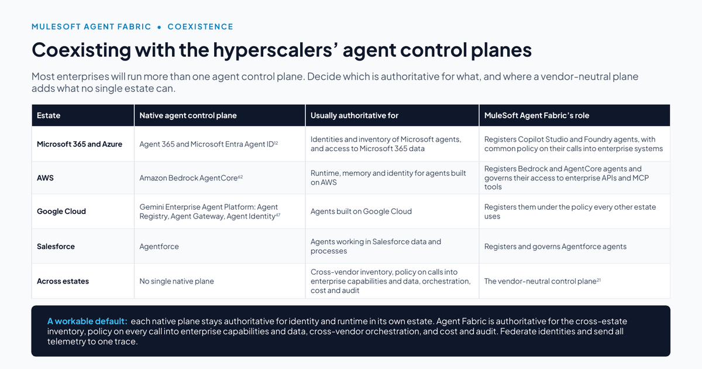
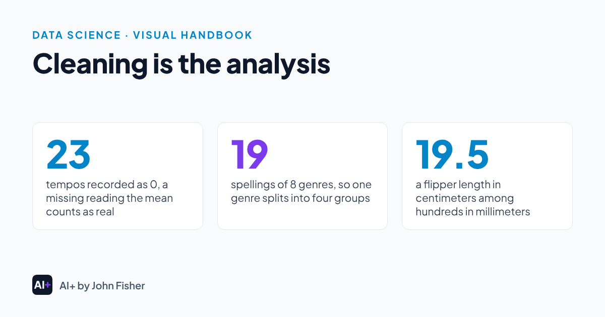
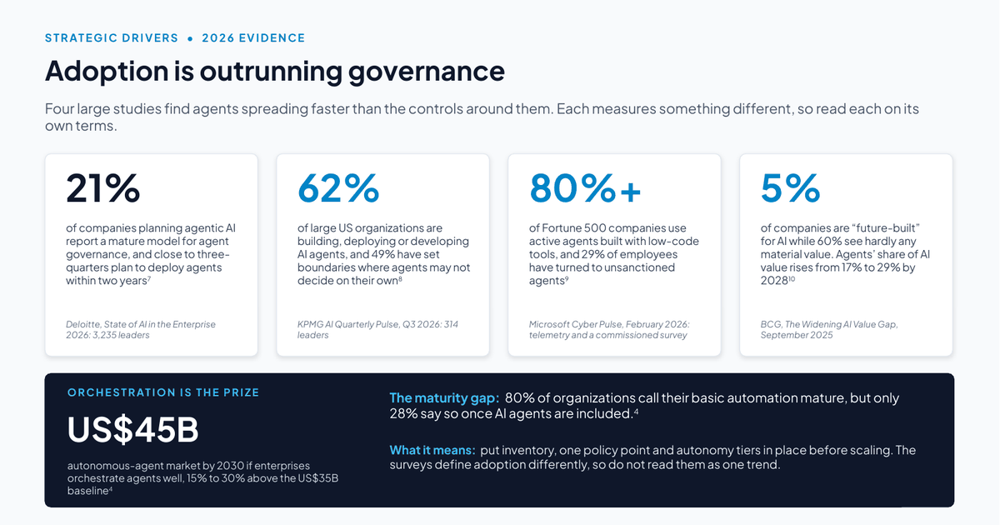
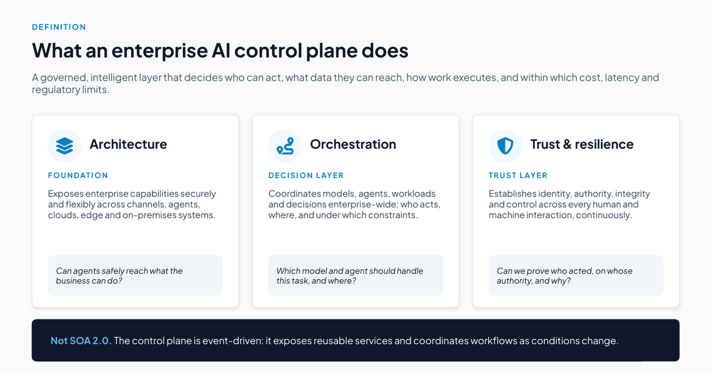

AI+
AI, plus the data science, math, statistics and Python behind it.
I’m John Fisher. I help enterprises architect the data foundation that AI depends on, and I’m also a statistician. AI+ is where I write about both, with handbooks to read and labs you can run.
Highlighted articles
The pieces I’m sharing now, newest first.
Newest articles
-

Decide which agent control plane is authoritative for what
Most enterprises will run more than one agent control plane. A default split says which one holds the record for inventory, identity, policy and audit.
Source: AI Control Plane Handbook
CIOCTOAI control plane
-

Cleaning is the analysis
Duplicates, hidden missing codes and mixed units change results without raising an error. Audit the data before you trust any number it gives you.
Source: Visual Handbook
AnalystDeveloperData science
-

Adoption is outrunning governance
Four recent surveys find AI agents spreading faster than the controls around them. Each measures something different, so read each one on its own terms.
Source: AI Control Plane Handbook
CIOCTOAI control plane
-

What an enterprise AI control plane is
Three capabilities define an enterprise AI control plane. Each one becomes a question you can put to any vendor that says it sells one.
Source: AI Control Plane Handbook
CIOCTOArchitectAI control plane
Start here
- For CIOsAdoption is outrunning governance
- For CTOs and architectsWhat an enterprise AI control plane is
- For developers and AI engineersBuilders need to plan for the 2026 changes to MCP and A2A
- For CISOsEach OWASP agentic threat maps to a control you can test
- For analystsEvery AI claim is a statistical claim
- For data scientists88.7% accurate and missing almost every case
Handbooks
Published · Edition 2026.1, October 2026
The AI Control Plane Handbook
A vendor-neutral handbook on the enterprise AI control plane: architecture, orchestration, trust and security, a north-star reference architecture, and a 12- to 24-month plan with value at every phase.
Hands-on
Statistics, Data Science and AI: A Visual Handbook
A visual handbook on statistics and data science. Its chapter pages pair with Python notebooks you can read online or run in Colab.
Coming next
More handbooks
- Data Science
- Statistics
- AI and Python Development Trends
Guides & Labs
Short guides say why a skill matters, then send you to a visual guide or a notebook you can run in Colab.